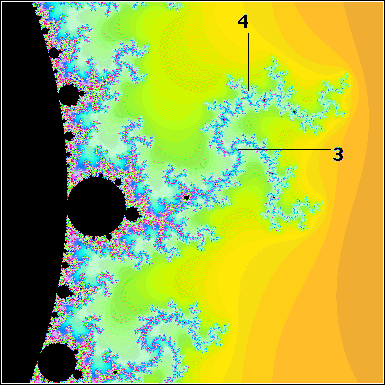

| For discs attached to the main cardioid, the period of the
cycle of the disc can be read off from the number of spokes in
the antenna from the disc. |
|
| For discs attached to other discs, the situation is more
complicated. |
| For example, this picture shows the 12-cycle disc
attached to the 3-cycle disc atop the main cardioid. |
| On this
3-cycle disc, the 12-cycle disc is in the relative position of
the 4-cycle disc on the main cardioid. |
| Note there is no point
with 12 spokes, but a point with 3 spokes, attached to which there
are points with 4 spokes. |
|  |